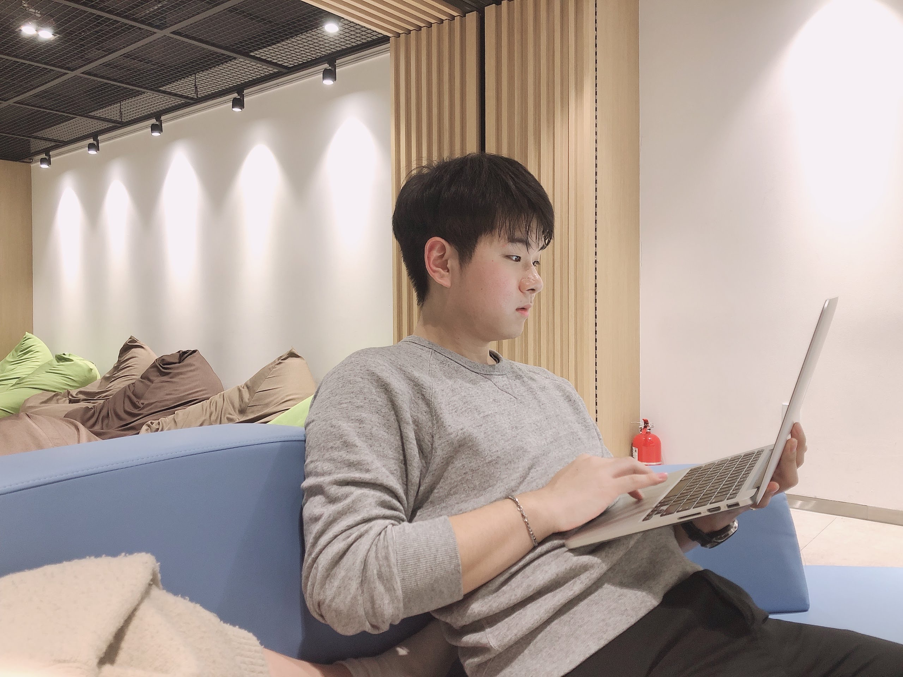

Thank you for watching me!

홍석주
Backend Engineer
"죽을 때도 편리하게 죽자."
"안될 것은 없다."
"저는 이런것을 중요하게 여깁니다."
협업
분업과 협업을 통해 더 좋은 시너지를 낼 수 있다 생각합니다.
협업을 통해 업무를 나눈다면 시간을 효율적으로 활용할 수 있습니다.
대화
친밀감을 형성하고 대화 중의 소재가 아이디어가 될 수도 있기 때문입니다.
또한, 협업을 위한 필수 전제조건이라 생각합니다.
성장
항상 성장하고 발전하고 싶은 갈망이 있습니다.
이런 갈망은 계속 무언가 탐색하고 공부할 수 있는 원동력이 됩니다.
상상
상상력을 갖춘 개발자가 더 가치 있는 결과를 만들 수 있다고 생각합니다.
고객의 니즈를 맞춤 개발하기 위해선 창의적 사고가 분명히 필요하기 때문입니다.
파이썬 지식을 습득하여, 주 프로그래밍 언어로 사용중입니다. 크롤링, 알고리즘 풀이 및 다양하게 사용하여 더 익숙해지면서 계속 성장을 하고 있습니다.
파이썬 기반의 백엔드 개발자를 희망하기에 웹프레임워크로 장고를 선택하였습니다. 장고의 CRUD기능을 활용하여 프론트엔드와 협업하여 서비스를 만들어 보았습니다. 또한, DRF를 실습하여 RESTful API서버로 활용해 보았습니다.
웹 개발자를 지망하면 프론트, 백엔드 구분없이 공부해야 된다는 언어로 생각하여 공부중입니다. jQuery 라이브러리를 활용하여 이벤트 콜백함수를 호출해서 원하는 기능을 구현해 봤으며, AJAX를 활용해 페이지 리로딩없이 비동기적으로 통신하여 리스폰스를 활용해보았습니다. 또한, 리액트를 조금 사용해보면서 ES6에 친숙해질 수 있도록 해봤습니다.
웹의 근간인 HTML5을 공부했습니다. 개인 프로젝트를 진행하면서 의미적으로 요소를 배치할 수 있도록 해보았고, 장고 템플릿 문법을 활용하여 데이터를 동적으로 사용해 보았습니다.
Bootstrap과 혼용하여 페이지 레이아웃을 나누고, CSS를 통해 페이지들의 원하는 모습을 디자인했습니다. media를 활용하여 반응형 디자인을 구현해봤습니다.
협업의 꽃이라 생각하는 git과 github를 사용해서 코드를 관리했습니다. 프로젝트 진행 시 git을 통해 소스 코드를 관리했고 github에 push하여 협업했습니다. 또한, github 블로그 및 포트폴리오 사이트를 제작하여 사용중입니다.
골프 크롤링설명 보기
selenium을 활용한 골프 크롤링 프로그램입니다.
해당 프로그램을 만들면서 파이썬의 전반적인 실력을 향상시켰으며,
웹 헤더에 대해서도 이해할 수 있는 프로젝트였습니다.
동국푸드설명 보기
Django를 공부하고 나서 첫 번째로 만든 프로젝트입니다.
동국대를 재학하면서 동기들과 맛있게 먹었던 주변 음식집들을 소개하고자 해서 만든 사이트입니다.
더불어 게시판 기능을 통해 자유로운 의견 활동이 가능합니다.
TODO 리스트설명 보기
프론트엔드를 공부한 친구와 파트를 나누어서 작업한 프로젝트입니다.
분업을 통해 백엔드 부분인 장고 부분을 맡아서 진행해 보았습니다.
웹 디자인설명 보기
현업 개발자 친구와 외주를 맡아서 작업을 해보았습니다.
실제 운영할 서비스의 디자인 부분을 맡아 작업을 해보았으며,
git을 적극 사용할 수 있는 기회로 branch, merge, pull request같은 개념을 이용 이해할 수 있었습니다.
인스타크램 클론 코딩설명 보기
장고의 더 많은 사용법과 이해를 위해서 에듀캐스트 "장고&리액트" 강의를 수강했습니다.
DRF를 사용해서 RESTful API를 구현해 보았고, 리액트를 활용해서 프론트엔드를 실습해 보았습니다.
이를 통해, 프론트엔드와 백엔드를 왜 나누는지 좀 더 이해할 수 있었습니다.
저의 도전은 계속 됩니다!
선린인터넷고등학교 정보통신학과
IT특성화 고등학교 중 1등이라는 선린인터넷고등학교를 재학하면서, 많은 교우들을 사귀고 다양한 IT 지식들을 습득할 수 있었습니다. 더불어, 기능반을 병행하여 네트워크 등 IT 지식을 많이 쌓아올릴 수 있는 시간이었습니다.
동국대학교 융합보안학과
동국대에 입학한것은 비단, 전공지식만 쌓아올리는게 아니라 다양한 환경에서 살고있는 동기들을 만나기 위해서입니다. 인생을 짧기에 제가 모든 지식을 습득할 수 없기에 인맥을 넓혀도 궁금한것은 해결할 수 있도록 하고 싶어서입니다. 덕분에 제가 몰랐던 지식들을 많이 알 수 있었습니다.
(주)트루네트웍스
고등학교 졸업후 5년간 재직한 네트워크 회사입니다. 병역특례를 함께 진행하면서 재직하였고, 위 기간 동안 실무경험과 많은 사회생활을 익힐 수 있었습니다.